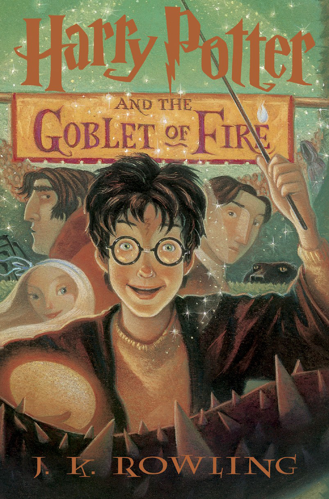

Harry Potter and the Goblet of fire
|  | Author : J.K Rowling Joanne Rowling was born on 31st July 1965 at Yate General Hospital near Bristol, and grew up in Gloucestershire in England and in Chepstow, Gwent, in south-east Wales.Her father, Peter, was an aircraft engineer at the Rolls Royce factory in Bristol and her mother, Anne, was a science technician in the Chemistry department at Wyedean Comprehensive, where Jo herself went to school. Anne was diagnosed with multiple sclerosis when Jo was a teenager and died in 1990, before the Harry Potter books were published. Jo also has a younger sister, Di. The young Jo grew up surrounded by books. “I lived for books,’’ she has said. “I was your basic common-or-garden bookworm, complete with freckles and National Health spectacles.” synopsis : 1-Page Summary of Harry Potter and the Goblet of Fire The book starts with Harry witnessing the murder of a Muggle named Frank Bryce in his dream. He wakes up from this nightmare in pain, and discovers that he has a scar on his forehead. The next day, the Weasleys take him to the Quidditch World Cup using a magical object called Portkey. |